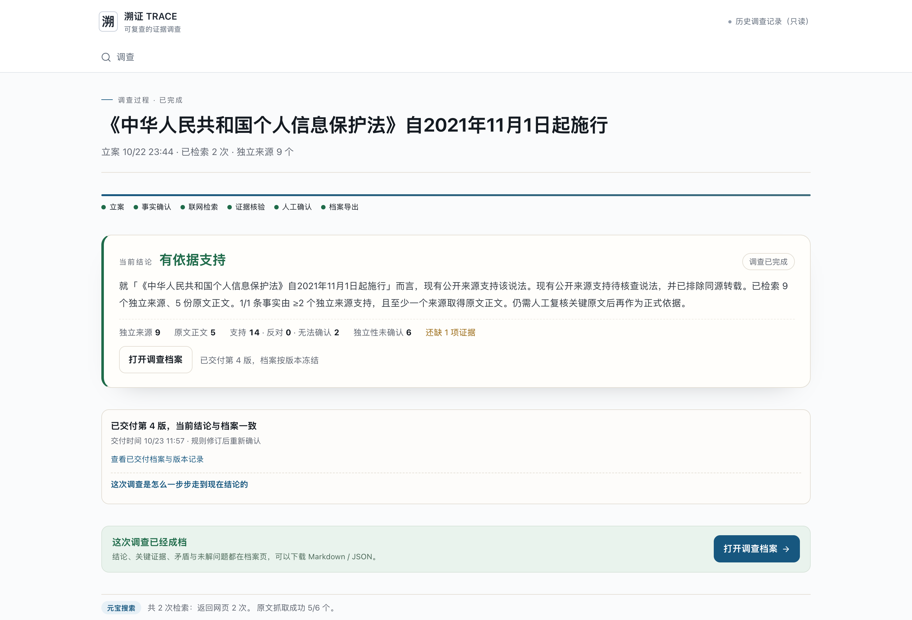
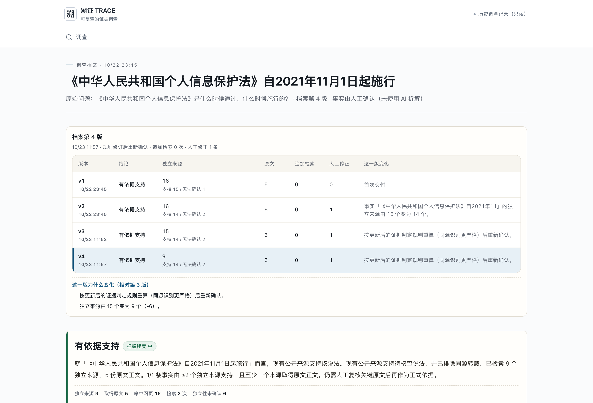

溯证 TRACE · 1024侦探赛道 · 2026-10-23材料整合版
- 调查过程
- 调查档案
- 运行：run_13dcfa4f-3074-4bdc-a36b-53b2933bb7b8
《中华人民共和国个人信息保护法》是什么时候通过、什么时候施行的？
待核查说法：《中华人民共和国个人信息保护法》自2021年11月1日起施行
有依据支持
就「《中华人民共和国个人信息保护法》自2021年11月1日起施行」而言，现有公开来源支持该说法。现有公开来源支持待核查说法，并已执行同源检测，来源独立性仍待核对。已检索 9 个未检测到重复的来源簇、5 份原文正文。1/1 条事实由 ≥2 个未检测到重复的来源簇支持，且至少一个来源取得原文正文。仍需人工复核关键原文后再作为正式依据。
检索 2 次，命中 16 条网页，取得 5 份网页正文；9 个来源簇未检测到重复。这些数量不代表已经证明来源独立。
- 《中华人民共和国个人信息保护法》自2021年11月1日起施行：规则关系“支持”；支持14、反对0、无法确认2、无关0。
围绕施行日期查找网页原文，保留规则原判、人工修正与版本记录。网页正文与搜索摘要分开标注，原始出处仍可逐条打开复核。
- 个人信息保护法 施行日期 2021年11月1日：HTTP 200，返回10条，耗时5279ms；RequestId 3a7832b2-0cde-4b97-b676-1787628cce0c。
- 个人信息保护法 全文 主席令：HTTP 200，返回10条，耗时1077ms；RequestId 8cccbf64-7b88-44fc-8033-4965b9a8ce85。
中国人大网 · 2021/12/31 08:06:00 · 二次报道或转载 · 正文已取 · 规则关系：支持
摘录：，个人信息保护法与国家安全法、网络安全法、民法典和数据安全法等法律法规共同构建起个人信息保护的法治堤坝。 提供全面体系化法律依据 2021年11月1日，《中华人民共和国个人信息保护法》正式施行，这标志着我国个人信息保护立法体系进入新的阶段。 这部专门法律明确，不得过度收集个人信息、大数据杀熟，对人脸信息等敏感个人信息的处理作出规制，充分回应了社会关切。 这意味着，个人面对非法收集和处理个人信息的侵权行为，能够获得更具体、更多样的救济方式，权利保障范围涵盖个人信息收集、存储、使用、加工、传输、提供、公开、删除等多个环
中国人大网 · 2021/08/24 08:11:00 · 二次报道或转载 · 正文已取 · 规则关系：支持
摘录：台规则，对严重违法处理个人信息的平台内产品或者服务提供者停止提供服务，定期发布个人信息保护社会责任报告接受社会监督等。 在监管部门方面，本法明确，国家网信部门和国务院有关部门在各自职责范围内负责个人信息保护和监督管理工作，同时对个人信息保护和监管职责作出规定，其中包括指导监督个人信息保护工作、接受处理相关投诉举报、组织对应用程序等进行测评、调查处理违法个人信息处理活动等。 据杨合庆介绍，个人信息保护法根据个人信息处理的不同情况，对违法处理个人信息的行为设置了不同梯次的行政处罚。对未造成严重后果的轻微或一般违法行为，
中国人大网 · 2021/08/23 08:22:00 · 二次报道或转载 · 正文已取 · 规则关系：支持
摘录：当前位置： 首页 个人信息保护法：构建以“告知-同意”为核心的处理规则 来源： 人民法院报 浏览字号： 大 中 小 2021年08月23日 08:22 8月20日，十三届全国人大常委会第三十次会议通过了个人信息保护法，将于2021年11月1日起施行。 个人信息保护法共8章74条，明确了个人信息处理活动应遵循的原则，构建以“告知-同意”为核心的个人信息处理规则，保障个人在个人信息处理活动中的各项权利，强化个人信息处理者的义务，明确个人信息保护的监管职责，并设置严格的法律责任。全国人大常委会组成人员普遍表示，这部专门法
中国政府网 · 2021/08/20 17:02:00 · 原始依据候选 · 出处未证实 · 规则关系：支持
摘录：中華人民共和國主席令（第九十一號）_滾動新聞_中國政府網 首頁 | 簡 | 繁 | EN | 登錄 個人中心 退出 | 郵箱 | 無障礙 EN https://www.gov.cn/
中国人大网 · 2021/11/01 08:29:00 · 二次报道或转载 · 正文已取 · 规则关系：无法确认
摘录：联网络信息中心统计报告，截至2021年6月，我国网民总体规模超过10亿，网站数量和App数量分别超过422万个和302万款。在信息化时代，个人信息保护已成为广大人民群众最关心最直接最现实的利益问题之一。对个性化推送、大数据杀熟等为人诟病的现实问题作出针对性规定，让人们对个人信息保护法的施行充满了期待。对于公民个人而言，如何真正实现“我的信息我做主”成为关注焦点。 个人信息收集、处理：我知情，我同意 “我已阅读并同意用户服务协议。”——网上有段子说，这是最大的“谎言”。 动辄万余字的冗长条款，夹杂着各种专业术语和法律
本案例未调用模型。不能用D案例的成功替代本案例的语义核验。
- 2026-10-22T15:45:41.739Z：参赛演示（人工确认）。填写值不是身份认证。
- 已交付5版；原始档案在在线档案页按版本下载。
- 人工修正：本机操作者改为“无法确认”，原因：该页只提到一句相关表述，未给出统计口径，不足以作为支持依据。原始判断与证据保留。
- 「《中华人民共和国个人信息保护法》自2021年11月1日起施行」有 6 条来源可能同源但无法确认，还缺能证明其独立性的信息。
- 模型失败、超时、Schema异常和取消尚未逐项通过真实DeepSeek调用验收。事实拆解仍人工，追问或修正后不自动沿用旧模型意见。
本材料为已完成真实调查的历史记录说明，不是此刻重新搜索或调用模型。事实拆解由人工完成，来源独立性未经证明。页面和说明校正旧系统措辞，不改写原始证据、原始模型返回和旧档案。原始档案保留当时文字，不应把“未检测到重复”理解为已证明相互独立。

